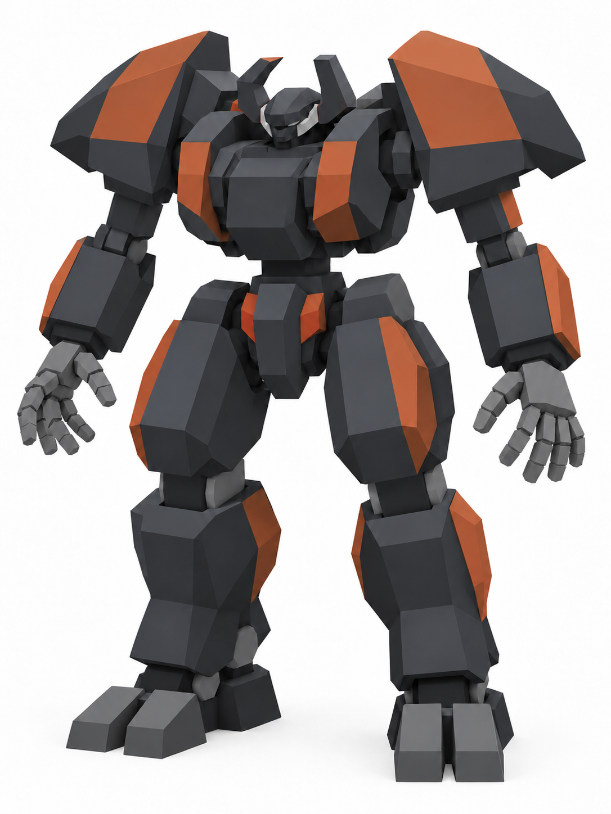

A
Stag Beetle


Design intent. Test a compact heavy silhouette whose identity comes from the shell and head outline.
Agent review. The broad split-shell shoulders, blunt sensor prongs and planted stance establish a heavy beetle silhouette. Broad flat armor faces remain readable. Both hands show four separate fingers and a side thumb after correction.
v001b · Hand correction complete · Ready for owner review
Saved generation & correction prompts
Same PS1 style reference for all four concepts; new designs.
Use case: stylized-concept. Asset type: one individual concept image for an animal-inspired low-poly mech exploration. Input image role: the supplied gray mech is a STYLE AND SIMPLICITY REFERENCE ONLY. Match its broad flat faces, extremely sparse detail, simple joints and early PlayStation 3D game-model appearance. Invent a substantially new silhouette and proportions for the animal concept below. Primary request: an original military bipedal mech in the industrial design spirit of the original PlayStation-era Armored Core games, taking structural inspiration from an animal. The animal informs the arrangement and outline of armor, body proportions and mechanical balance. It remains a piloted armored machine with a compact sensor head, torso core, waist, two articulated arms, two legs and compact booster housings. CRITICAL HAND DESIGN: BOTH hands have exactly FIVE INDIVIDUAL DIGITS: FOUR distinct fingers in a row plus ONE visibly separate opposable thumb. Use a simple block palm, four separate long cuboid fingers of slightly varied lengths, each made from only two rectangular segments, and a short two-block thumb attached to the side. Make clear air gaps between every finger. Pose both hands relaxed and open with palms angled partly toward the camera, fingers spread slightly and completely visible, away from thighs. Make the fingers large enough to count. Fingers must have the SAME deliberately crude angular geometry as the body, without rounded knuckles or intricate joints. No mittens, fused grippers, pincers, claws replacing fingers, three-finger hands or six digits. Style/medium: render a deliberately primitive low-poly 3D game model. Main armor shells are very simple box, wedge and low-sided prism forms, just a few broad polygon faces per piece, flat shading and solid colors, occasional broad painted blocks only. Simple square hinges. Keep the fewest forms that express the unique silhouette. No fine panel lines, tiny bevels, greebles, rivets, hoses, pistons, realistic metal, weathering, elaborate textures, wireframe overlay or triangle-pattern textures. No voxel aesthetic, chibi proportions, smooth modern toy render, organic flesh, fur, feathers or decorative animal costume. Composition: ONE mech, full body from helmet to feet, front three-quarter angle about 25 degrees so torso and limb depth read but both hands are visible; neutral grounded standing stance, arms slightly away from torso, entire head, silhouette extremities, hands and feet in frame with white margins. Neutral even light, pure white backdrop, no scenery, no text, logos, labels, inset views, diagrams or watermark. Portrait composition about 3:4. Empty hands, no guns, shields, carried props or weapon mounts that obscure the silhouette. Concept A — STAG BEETLE heavy biped. Design a squat but adult-proportioned armored core with an unusually wide compact torso, a small head tucked low between huge angular shoulders, two short broad squared sensor prongs that recall stag-beetle mandibles above the head, and a pair of broad trapezoid shell plates that wrap the shoulder/back silhouette like split elytra. The shell shapes must be flat-sided wedges, never rounded carapaces. A short narrow waist, sturdy thick thighs and short broad wedge shins create a planted heavy-machine stance. Forearms are substantial but expose the five-digit block hands. Main colors charcoal armor with a few large muted oxide-orange shell faces, dark square joints and warm-gray hands. No actual beetle head or extra insect limbs; no giant ornamental antlers.
Targeted hand correction
Use case: precise-object-edit. Edit the supplied mech concept. Change ONLY the hands to correct the digit count. The hand on the RIGHT SIDE OF THE IMAGE currently has only three long fingers plus its side thumb. Add its missing FOURTH long finger. It needs FOUR separate long fingers in a row at the end of the palm (index, middle, ring, little), plus the EXISTING separate thumb on the side, for FIVE total digits. The hand on the LEFT SIDE OF THE IMAGE already has four fingers and a thumb; keep it with five. This missing finger is the entire requested edit. Make the little finger short and the middle finger longest so the four-finger fan is easy to read. Widen the block palm just enough to attach FOUR fingers. Show clear white air gaps between all four fingers and keep the thumb distinct on the side. Make both palms face a little more forward only if necessary so all five digits can be counted. Use the same very simple low-poly two-segment cuboid fingers and flat gray shading as the current hands. No rounded knuckles, realistic robotics or added hand detail. Preserve EVERYTHING else: exact mech identity, silhouette, head, armor, proportions, colors, pose of the body and limbs, camera angle, framing, white backdrop, light and PS1-style geometry. Same full-body image. No crop, closeup, insets, text, extra limbs or redesign. Before finishing, count FOUR long fingertips plus ONE side thumb per hand.